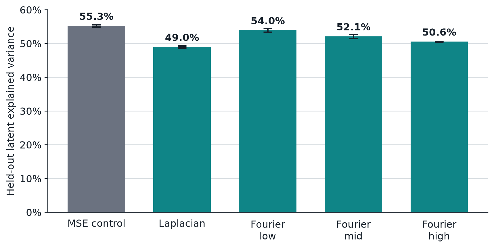

Sparse autoencoders you can steer
A sparse autoencoder (SAE) reconstructs a layer's activations using a few active units at a time, and the learned directions form a dictionary of features. Interpretability work treats that dictionary as a vocabulary for the model. The trouble is that it depends on more than the data. Two SAEs with the same objective and different seeds can disagree a lot; earlier work found as little as 30% feature overlap for TopK SAEs on a language model.
Standard objectives only ask for good reconstruction under a sparsity budget. When several dictionaries reconstruct equally well, nothing in the loss prefers one, and the optimizer takes whichever it reaches. We tried giving the loss a preference.
Tilting the loss
We add a transform of the reconstruction error to ordinary MSE:
For image latents we used a Laplacian, which weights local edge content, and three disjoint Fourier-magnitude bands (low, mid, high), which weight structure at different spatial scales.
A small model shows the lever exists. Take a residual with two directions and a dictionary with room for one, where direction 1 appears 75% of the time. Under MSE, keeping axis 1 costs 0.25 and keeping axis 2 costs 0.75, so MSE keeps axis 1. Weight the second axis by 4 and the costs become 1.0 and 0.75, so the tilted loss keeps axis 2. With the MSE term kept as an anchor, the tilted loss accepts exactly the reconstructions MSE accepts, so nothing a plain SAE can represent is lost. Without the anchor, a transform with a nullspace can call a bad reconstruction perfect, which is why every objective keeps it.

On trained SAEs
We trained TopK SAEs on the 512-dimensional latent of a convolutional autoencoder on faces, in vector and spatial layouts at two sizes, with the five objectives. Within each setting only the seed varies.
The dictionaries separate by objective. Embedding each held-out image's residual without labels separates by training objective and shows nothing by seed. A linear discriminant on single-feature contributions orders the objectives from MSE and Fourier-low to Laplacian and Fourier-high, with about 64% five-way held-out accuracy against 20% chance. Four dictionary-similarity metrics (decoder cosine, activation CKA, activation correlation, atom recurrence) agree that same-objective SAEs are more alike than different-objective ones at matched seeds.
Reconstruction stays close to the control: held-out explained variance is 49 to 54% across objectives, with 55.3% for MSE.

What the different dictionaries are good for
Linear probes on each SAE's features read out four things: CelebA attributes, decoder-output geometry, source-image geometry and controlled transforms. Fourier-low makes decoder-output geometry easier to read (0.561 against 0.478 for MSE), and the Laplacian does the same for controlled transforms (0.203 against 0.185).

We also planted twenty known visual effects (a checkerboard, a tint, a local blob and so on) into images. SAEs whose objective matches an effect's geometry recover it better. Absolute numbers are small because planted signals are out of distribution, but the ranking is consistent.
For auditing, you often see a model's outputs but not its dictionary. So we compared SAEs by which held-out images each reconstructs worst, which needs no feature correspondence. Same-objective SAEs agree on the hard images more than different-objective ones, on four probe datasets including faces the autoencoder never saw.

Combining objectives
A five-branch SAE with one MSE branch and four routed to the transformed objectives reaches 48.88% peak validation explained variance, against 50.22% for a five-branch MSE control. That is a 1.3-point cost for four steerable vocabularies in one model.

Limits
This is TopK SAEs on one convolutional autoencoder trained on faces. The transforms are image-specific, and language models would need different ones. I haven't tried production-scale models or other backbones. The failure-mode result is correlational: the objective predicts which images an SAE struggles with, not why. We chose the four transforms by hand, so a setting without prior knowledge of the right geometry would need a way to choose or learn the transform.
The interpretability explorer has attention and the logit lens on real GPT-2 activations. The paper is with Ilona Demler and Pietro Perona, under review at CVPR 2027.